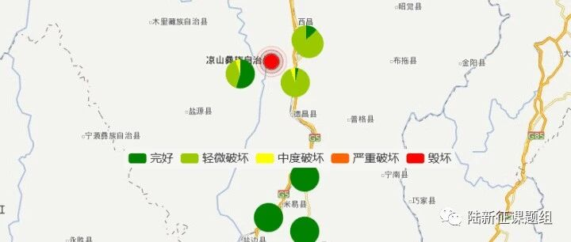

2018年10月31日四川凉山州西昌市5.1级地震破坏力分析
致谢和声明：
感谢中国地震台网中心为本研究提供数据支持。本分析仅供科研使用，具体灾情和灾损分析应根据现场调查情况确定。
一、地震情况简介
根据中国地震台网测定，北京时间2018年10月31日16时29分在四川凉山州西昌市（北纬27.70度，东经102.08度）发生5.1级左右地震震源深度19千米。
二、强震记录及分析
20181031四川凉山州西昌市地震获得了7条地震动，由于地震动没有完全收集，可能还有更强的记录。典型地震记录分析如下：
51XCH台站记录台站位置为北纬27.59度，东经102.2度(图1)，记录到水平向地震动峰值加速度为85.208cm/s2，竖直向地震动峰值加速度为199.081cm/s2。该地震动如图2、图3所示。

图1 51XCH台站位置

(a) EW

(b) NS

(c) UD
图2 51XCH台站地面运动记录

图3 51XCH台站记录反应谱
三、地震动对典型单体结构破坏能力分析
(1) 对典型多层框架结构破坏作用
模型1：六层框架结构
将51XCH台站记录输入立面布置如图4 (a)所示的6度、7度和8度设防的典型六层钢筋混凝土框架结构，得到其层间位移角包络如图4 (b)所示。


(a) 立面布置示意图
(b) 层间位移角包络图
图4 典型六层钢筋混凝土框架结构
模型2：三层框架结构（感谢中国建筑设计研究院王奇教授级高工提供模型）
将51XCH台站记录输入立面布置如图5 (a)所示的6度、7度和8度设防的典型三层钢筋混凝土框架结构，得到其层间位移角包络如图5 (b)所示。


(a) 立面布置示意图
(b) 层间位移角包络图
图5 典型三层钢筋混凝土框架结构
(2) 对典型砌体结构破坏作用
模型1：单层未设防砌体结构
选取图6所示纪晓东等开展的单层未设防砌体结构振动台试验模型，输入51XCH台站记录，分析结果表明该结构将处于完好状态。（纪晓东等，北京市既有农村住宅砖木结构加固前后振动台试验研究，建筑结构学报，2012,11,53-61.）

图6 单层三开间农村住宅砖木结构振动台试验
模型2：五层简易砌体结构
选取图7所示朱伯龙等开展的五层简易砌体结构足尺试验模型，输入51XCH台站记录，分析结果表明该结构将处于完好状态。（朱伯龙等，上海五层砌块试验楼抗震能力分析，同济大学学报，1981,4,7-14.）


(a) 平面图
(b) 剖面图
图7 五层简易砌体结构布置
模型3：四层设防砌体结构
选取图8 所示许浒等提出的四层设防砌体模型，输入51XCH台站记录，分析结果表明该结构层间位移角包络图如下图所示（许浒等，砌体结构在地震下的非线性计算模型，四川建筑科学研究，2011(06): 170-175.）


(3) 对典型桥梁破坏作用
模型1：某80年代公路桥梁（感谢福州大学谷音教授提供模型）
选取图9所示某80年代公路桥梁模型，输入51XCH台站记录，分析结果表明该桥梁将处于完好状态。

图9 某80年代公路桥梁模型
模型2：某特大桥引桥（感谢福州大学谷音教授提供模型）
选取图10所示某特大桥引桥模型，输入51XCH台站记录，分析结果表明该桥梁将处于完好状态。

图10 某特大桥引桥模型
四、地震动对典型城市区域破坏能力分析
根据本课题组之前数据积累，将51XCH台站的地面运动分别输入凉山地区典型城市、乡镇和典型农村，得到考虑建筑承载力参数不确定性后的破坏状态如图11-图13所示。图中每类结构有三列，分别为结构抗力取中位值和加减一倍标准差的预测结果。（说明：由于每个结构的实际抗震能力都是有一定不确定性的，所以我们在新版的程序当中加入了对结构抗力不确定性的考虑）。

图11 51XCH台站地震动记录对凉山地区典型城市的破坏力

图12 51XCH台站地震动记录对凉山地区典型乡镇的破坏力

图13 51XCH台站地震动记录对凉山地区典型农村的破坏力（ 需要说明的是，在本分析中，四川凉山州西昌市乡村的区域建筑模型中没有框剪结构。）
为了比较不同地震动对区域的破坏力，这里将地震动输入到清华校园619栋建筑中，其结构类型和建筑功能统计如图14所示。计算得到考虑承载力参数不确定性后建筑的破坏状态如图15所示，清华校园典型建筑预测破坏状态如表1所示。


(a) 结构类型比例
(b) 建筑功能比例
图14 清华校园建筑

图15 51XCH台站地震动记录对清华大学校园的破坏力
表1 清华校园典型建筑预测破坏状态

利用密布强震台网在震后获取的实时地震动信息，再结合城市抗震弹塑性分析，就可以得到地震发生后不同地点的建筑破坏情况，为抗震救灾决策提供科学支撑。图16为根据2018年10月31日四川凉山州西昌市5.1级地震震中附近范围内台站记录分析得到的建筑震害分布示意图。点击“阅读原文”可以查看网页版地震力分布图。


图16 2018年10月31日四川凉山州西昌市5.1级地震不同台站地震记录破坏力分布图
相关研究
长按识别二维码，关注我们的科研动态